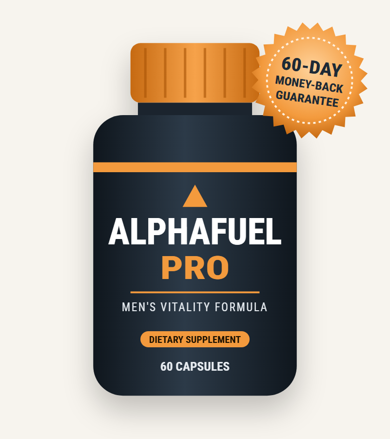
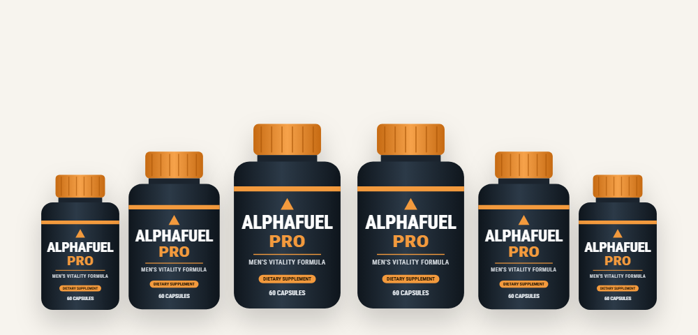

Testosterone Support
Tongkat ali and boron have been studied for supporting healthy testosterone, and stinging nettle root may help keep more testosterone in its "free," usable form.*
An honest look at what's inside AlphaFuel Pro, what the research really shows, and where to buy it safely

AlphaFuel Pro (also searched as Alpha Fuel Pro) is a daily capsule for adult men that brings together seven botanical and mineral ingredients aimed at energy, stamina, healthy testosterone and sexual wellness. In this AlphaFuel Pro review we look at each ingredient, separate solid research from marketing, cover safety and side effects, and explain the current price and how to order from the Alpha Fuel Pro official website.
AlphaFuel Pro is a dietary supplement made for adult men who feel their energy, drive or performance isn't what it used to be. It comes as capsules — two a day — and each bottle lasts a month.
The AlphaFuel Pro formula combines six plant extracts and one mineral: stinging nettle, tongkat ali, epimedium (also called horny goat weed), saw palmetto, wild yam root, sarsaparilla root and boron. Several of these have been used for centuries in traditional medicine for male vitality, and a few have been studied in modern clinical trials.
The vendor describes AlphaFuel Pro with dramatic language about "hydraulic repair" and "pressure valves." In plain terms, the goal of AlphaFuel Pro is to support three things: healthy testosterone levels, healthy blood flow, and day-to-day energy and stress resilience — all of which play a role in men's sexual health.
It's important to be realistic. AlphaFuel Pro is a supplement, not a medicine. It isn't a proven treatment for erectile dysfunction (ED), and ED can be an early sign of heart disease, diabetes or other conditions that deserve a doctor's attention. A supplement may support general wellness, but it shouldn't replace a check-up.
The formula targets three areas that affect men's energy and performance.*
Tongkat ali and boron have been studied for supporting healthy testosterone, and stinging nettle root may help keep more testosterone in its "free," usable form.*
Epimedium contains icariin, a compound that lab studies link to the nitric-oxide pathway involved in blood flow — the same pathway many ED medicines act on, though far more weakly.*
Tongkat ali has also been studied for lowering stress hormones and improving mood, and lower stress can make a real difference to energy and drive.*
Saw palmetto, wild yam and sarsaparilla round out the AlphaFuel Pro formula. Saw palmetto is mainly known for prostate and urinary health, while wild yam and sarsaparilla are traditional herbs with little modern evidence — more on that in the research section below.
Because the AlphaFuel Pro ingredients work gradually, consistency matters. Most herbal formulas need several weeks of daily use before any change is noticeable, which is why the vendor recommends three to six months.
Seven ingredients make up the AlphaFuel Pro formula. Here's what each one is and why it's included in AlphaFuel Pro.
A root from Southeast Asia, traditionally used for male vitality. It is the best-studied ingredient in AlphaFuel Pro, with small human trials on testosterone, mood and stress.*
A leafy plant used in traditional Chinese medicine. Its active compound, icariin, has been studied mostly in lab and animal research for blood-flow effects.*
Nettle root may bind to SHBG, a protein that ties up testosterone, in lab studies. It's also used for prostate-related urinary symptoms.*
Berries from a palm native to the US. Well studied for prostate and urinary comfort, with mixed results; there's little evidence for direct effects on performance.*
Contains diosgenin, a plant compound sometimes marketed as a "natural hormone." The human body can't turn diosgenin into testosterone, so its role here is traditional.*
A tropical vine root once popular as a tonic. It contains antioxidant plant compounds, but there's little human research on male vitality.*
A trace mineral found in fruit, nuts and vegetables. A small human study found that boron for one week raised free testosterone in healthy men.*
The vendor lists no caffeine or synthetic stimulants. Exact ingredient amounts aren't shown on the sales page — check the supplement facts label on your bottle.
Many sites claim every AlphaFuel Pro ingredient is "clinically proven." Here's an honest summary of the evidence for each one.
| Ingredient | Evidence level | What studies suggest |
|---|---|---|
| Tongkat ali | Moderate (small human trials) | Modest support for testosterone, especially in stressed or older men, plus lower stress hormones |
| Boron | Limited (small human study) | A short trial found higher free testosterone and lower inflammation markers |
| Epimedium | Mostly lab & animal | Icariin shows weak effects on the blood-flow pathway in lab studies; human data is scarce |
| Stinging nettle root | Lab + prostate trials | May help free testosterone in lab studies; some evidence for urinary symptoms |
| Saw palmetto | Many trials, mixed | Studied for prostate and urinary health; little evidence for performance |
| Wild yam | Very limited | The body can't convert its compounds into testosterone |
| Sarsaparilla | Very limited | Traditional use only; little human research |
Two more things are worth knowing. First, research on individual ingredients doesn't tell us how the combined AlphaFuel Pro formula performs — and no published trial has tested it. Second, results in studies depend on the dose, and the sales page doesn't list how much of each ingredient is in a serving.
Tongkat ali is the ingredient doing most of the work in AlphaFuel Pro. Reviews of the small human trials suggest it may modestly raise total testosterone, with clearer effects in men who start with low levels or are under heavy stress. Other studies report improvements in mood, tension and cortisol balance after about four weeks. The quality of the extract matters: studied products are usually standardized water extracts, and cheap powders may contain far less of the active compounds.
Boron is less famous but interesting. In one small study, healthy men who took boron for a week showed higher free testosterone and lower estradiol and inflammation markers. The study was short and tiny, so it needs confirming, but boron is inexpensive and safe at normal doses, which makes it a sensible addition to AlphaFuel Pro.
Epimedium's nickname, horny goat weed, does a lot of its marketing. Its compound icariin acts on the same enzyme as prescription ED drugs, but in lab tests it is many times weaker, and the amount absorbed from an oral supplement is low. That's why we treat blood-flow claims as possible support rather than a drug-like effect.
Our take: tongkat ali and boron give AlphaFuel Pro a reasonable foundation for testosterone and energy support. The blood-flow and "ED" claims rest on much weaker evidence. Treat dramatic promises in ads with caution.
Based on its ingredients, these are the main benefits AlphaFuel Pro is designed to support.*
Tongkat ali, boron and nettle root support normal testosterone levels and more of it in usable form.*
Supporting healthy hormones and stress levels may help with everyday energy and endurance.*
Healthy testosterone and lower stress can support libido and confidence in the bedroom.*
Epimedium is included for its traditional role in supporting healthy circulation.*
Tongkat ali has been studied for lowering cortisol and improving mood under stress.*
Saw palmetto and nettle root are popular for supporting prostate and urinary health as men age.*
Using AlphaFuel Pro is straightforward. Based on the vendor's directions:
Because the AlphaFuel Pro guarantee lasts 60 days, decide by about week seven whether it's working for you.
The vendor says AlphaFuel Pro is "completely safe" with no side effects. The natural ingredients in AlphaFuel Pro can still cause side effects and interact with medicine, so here's a more balanced view:
If you have erectile problems, see a doctor even if you plan to try a supplement. ED is often the first sign of narrowed blood vessels, high blood pressure or diabetes — catching those early matters far more than any capsule.
The vendor states that AlphaFuel Pro is made in an FDA-registered facility. Keep in mind that the FDA registers facilities but does not approve dietary supplements.
We looked at the AlphaFuel Pro formula, the evidence, the price and the guarantee. Here's our honest assessment.
AlphaFuel Pro is a reasonable natural option for healthy men who want to support energy, drive and normal testosterone levels — mainly thanks to tongkat ali and boron. It is not a proven treatment for erectile dysfunction, and the ads promise more than the science supports. If you've ruled out medical causes with your doctor and want to try it, buy from the official website so you're covered by the 60-day guarantee, and judge the results honestly before the window closes.
Visit the AlphaFuel Pro Official WebsiteHow AlphaFuel Pro compares with the most common alternatives.
| Option | How it works | Typical cost | Main downside |
|---|---|---|---|
| AlphaFuel Pro | 7-ingredient herbal and mineral blend taken daily | $49–$79 per month | Gradual, modest effects; limited evidence for ED |
| Single tongkat ali supplement | One researched herb at a labeled dose | $20–$40 per month | Narrower; quality varies by brand |
| Prescription ED medicine | Proven drugs that improve blood flow on demand | Varies; generics are cheaper | Needs a doctor; side effects; not with nitrates |
| Lifestyle changes | Exercise, sleep, weight loss, less alcohol | Free to low cost | Takes effort and time — but helps the most |
Prescription medicines are proven in large clinical trials. A supplement can support general wellness but isn't a substitute for medical care.
No supplement works in a vacuum — AlphaFuel Pro included. These habits have strong research behind them for men's energy, testosterone and sexual health — and they'll make AlphaFuel Pro more likely to help:
Testosterone is made mostly during sleep. Studies show that a week of short sleep can lower daytime testosterone in healthy young men.
Strength training and regular aerobic exercise support healthy hormones and blood flow. Even brisk daily walks improve circulation.
Extra belly fat is linked to lower testosterone and higher ED risk. Losing even a modest amount of weight often helps both.
Both damage blood vessels over time and are among the most common causes of performance problems.
Chronic stress raises cortisol, which works against testosterone and drive. Exercise, time outdoors and good sleep all help.
A simple blood test can check testosterone, blood sugar and cholesterol — and rule out problems a supplement can't fix.
A fair check of what looks trustworthy about AlphaFuel Pro and what deserves a closer look.
Put together, AlphaFuel Pro appears to be a genuine supplement sold by a real vendor with a working refund policy — it isn't a scam in the sense of taking money and shipping nothing. The bigger problem is the gap between the marketing and the science. Go into AlphaFuel Pro expecting modest, gradual support for energy and drive rather than the overnight transformation the ads suggest, and you're far less likely to be disappointed.
The safest way to protect yourself is simple: buy only through the official order page, keep your receipt, set a reminder for around day 50, and request a refund in time if you don't notice a difference.
Lower energy and weaker performance are common as men get older, but they aren't always "just age." Some causes need medical treatment, and a supplement can hide the warning signs while the real problem gets worse. Book an appointment before trying any vitality product if any of these apply:
A doctor can order a morning testosterone test, blood sugar and cholesterol panels, and review your medicines. If everything comes back normal and you still want a natural option, you can then decide about AlphaFuel Pro with much better information — and your doctor can confirm that its ingredients won't interfere with anything you take.
Talking about sexual health can feel awkward, but doctors discuss it every day. Bringing it up early is one of the best things you can do for your long-term heart and metabolic health.
Search for the Alpha Fuel Pro official website and you'll find many sites that all claim to be the real store, often with tiny spelling changes in the address. Some show fake doctor endorsements or star ratings. Here's how to make sure you're buying genuine AlphaFuel Pro:
For the full guarantee and bonuses, order from the AlphaFuel Pro official website.
Each AlphaFuel Pro bottle is a 30-day supply. Every package includes two free digital bonuses and the 60-day money-back guarantee.
60-Day Supply · Try It
$79/bottle
2 free bonuses
180-Day Supply
$49/bottle
List $414 · Save $120
120-Day Supply
$69/bottle
List $316 · Save $40
Prices checked on the official order page on October 16, 2026 and may change; other offer pages may show different bundles. One-time purchase — no subscription.
The best place to buy AlphaFuel Pro is the official website, which offers the bundle prices, free bonuses and the 60-day guarantee. Here's how to order:

Every AlphaFuel Pro order from the official website is covered by a 60-day money-back guarantee.
Use the AlphaFuel Pro capsules as directed. If you're not satisfied, contact the vendor within 60 days and return the bottles — even empty ones — for a refund. The vendor describes it as "no questions asked."
Keep your order confirmation, and start your return well before day 60. The guarantee only applies to orders placed through the official website.
Try AlphaFuel Pro Risk-FreeAlphaFuel Pro is a dietary supplement for adult men that combines seven ingredients — stinging nettle, tongkat ali, epimedium, saw palmetto, wild yam, sarsaparilla and boron — to support energy, stamina, healthy testosterone and sexual wellness. It is taken as two capsules a day.
Some AlphaFuel Pro ingredients have encouraging research behind them, especially tongkat ali and boron for testosterone, but others rely mostly on lab studies or tradition, and the finished formula has not been tested in a published clinical trial. Results vary, and AlphaFuel Pro is not a replacement for medical treatment of erectile dysfunction.
The official AlphaFuel Pro order page is on alphafuelpro.com. Many look-alike sites with similar spellings call themselves the official website, and orders from them may not include the 60-day money-back guarantee.
On the official order page AlphaFuel Pro costs $79 per bottle for 2 bottles ($158 plus a small shipping fee), $69 per bottle for 4 bottles ($276 with free US shipping) and $49 per bottle for 6 bottles ($294 with free US shipping). Every package includes two free digital bonuses. Each bottle is a 30-day supply.
According to the vendor, take two AlphaFuel Pro capsules a day with water, preferably with a meal. Each bottle contains 60 capsules, enough for 30 days.
Possible side effects include stomach upset, trouble sleeping or restlessness from tongkat ali, and dizziness or a fast heartbeat from high doses of epimedium. Men with heart conditions, low blood pressure, prostate cancer or kidney problems, or who take blood thinners, blood pressure, diabetes or prescription ED medicine, should talk to a doctor before taking AlphaFuel Pro.
The vendor says some men notice changes within the first weeks and the best results come after three to six months of daily use. Herbal ingredients like tongkat ali usually take several weeks of consistent use to show any effect.
Do not combine AlphaFuel Pro with prescription ED medicine or nitrates without your doctor's approval. Epimedium has mild effects on the same pathway, and combining products that affect blood flow can lower blood pressure too much.
No. AlphaFuel Pro is sold as a one-time purchase of the package you choose on the official website. There is no auto-ship.
AlphaFuel Pro has a 60-day money-back guarantee. If you are not satisfied, contact the vendor within 60 days and return the bottles, even empty ones, for a refund.
AlphaFuel Pro listings appear on Amazon from third-party sellers. Those orders may not include the official package prices, bonuses or the 60-day money-back guarantee, which apply to orders from the official website.
The product is written AlphaFuel Pro, but many people search for it as Alpha Fuel Pro or AlphaFuelPro. They all refer to the same men's vitality supplement.
Get AlphaFuel Pro for as little as $49 per bottle with free US shipping on the 6-bottle package — with two free bonuses and a 60-day money-back guarantee.
Order AlphaFuel Pro Now